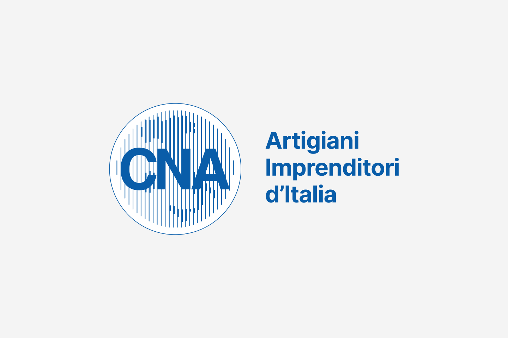
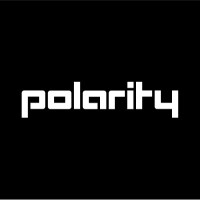

Progetto UST
Una lezione introduttiva sui contenuti del percorso PCTO promosso dal Ministero, rivolta a tutti gli indirizzi scolastici. L'incontro, tenuto dal prof. Vairo, ha offerto una panoramica sulle opportunità formative e sulle attività previste.

Progetto Monta&Smonta
Un progetto educativo pratico che permette di esplorare i componenti interni del PC attraverso lo smontaggio e il rimontaggio. Favorisce l'apprendimento attivo e la comprensione diretta della tecnologia.

Progetto BUSCONNECT
Un progetto in cui studenti di terza media aiutano gli anziani dell'associazione AUSER a migliorare le loro competenze informatiche. Inclusione digitale e scambio intergenerazionale.

Giovani e Imprese
Un incontro con la CNA dedicato all'evoluzione del mondo del lavoro, con uno sguardo agli effetti dell'automazione e all'importanza di costruire un percorso di orientamento che integri abilità tecniche e competenze trasversali.
Mi Presento
Incontro con due recruiter professioniste su come scrivere un curriculum vitae in formato Europass e affrontare un colloquio di selezione con strumenti concreti e immediatamente applicabili.

Polarity
Incontro con i rappresentanti di Polarity sul mondo delle applicazioni web moderne: architettura client-server, JavaScript, Node.js, TypeScript e il rapporto con il cliente nel lavoro su commissione.
Altri progetti in arrivo!
I progetti rimanenti del quinto anno saranno aggiunti non appena disponibili.